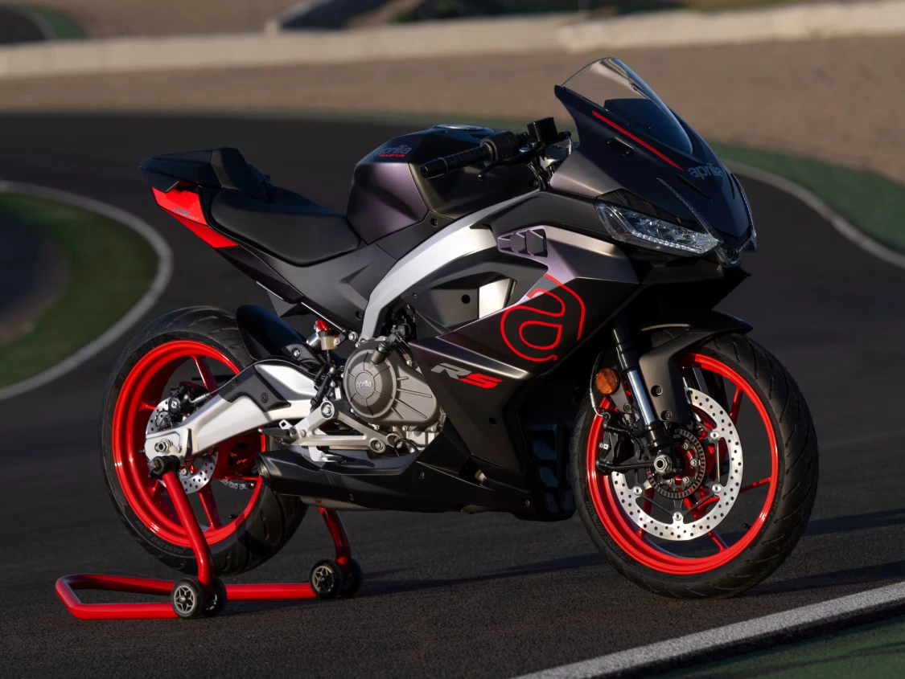
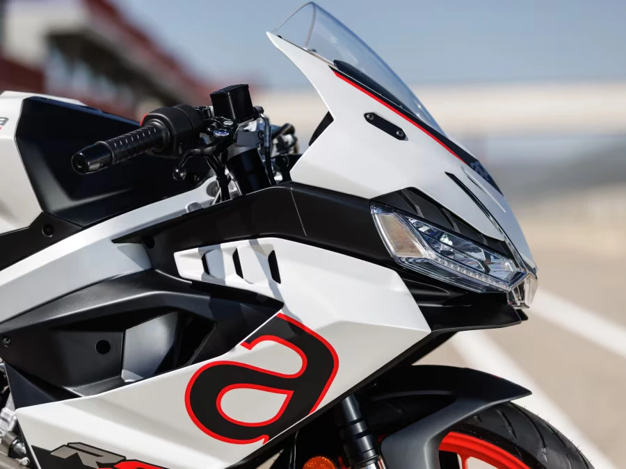

Generation 457
This is for the athletes, for the racing enthusiasts, for the new generation of bikers. This isn’t just about choosing a bike, it is about discovering the RS tailored to you. Enter Aprilia RS 457.

From history, to make history again.
Lightness, ease of riding and technological equipment are the strong points of the new Aprilia RS 457, capable of exalting every rider, both on the road and on the track. The grit of the new RS 457 is in fact that of the legendary RS range: the super sports bike model that made motorbike history.

 Create account.
It's free
Create account.
It's free